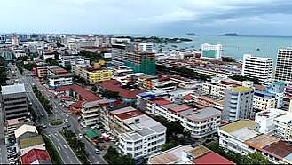

Explore Sabah's Top Destinations
From towering mountains and pristine islands to ancient rainforests and vibrant cities, discover the diverse wonders that make Sabah one of Southeast Asia's most captivating destinations.
Start ExploringMount Kinabalu
Conquer Southeast Asia's Highest Peak
Quick Facts
- Height: 4,095m (13,435 ft)
- Location: Kinabalu Park, Ranau
- Status: UNESCO World Heritage
- Difficulty: Moderate to Challenging
- Duration: 2 days, 1 night
- Best Time: March - August
- Permit: Required (book in advance)
Standing majestically at 4,095 meters (13,435 feet) above sea level, Mount Kinabalu is not only the highest mountain in Malaysia but also one of the highest peaks in Southeast Asia. This UNESCO World Heritage Site is the crown jewel of Kinabalu Park and a bucket-list destination for trekkers and nature enthusiasts from around the world.

A Mountain of Legends
The name "Kinabalu" is believed to come from the Kadazan-Dusun words "Aki Nabalu," meaning "the revered place of the dead." The mountain holds deep spiritual significance for local indigenous communities, who believe it is the resting place of their ancestors' spirits.
Beyond its cultural importance, Mount Kinabalu is a geological wonder. Formed approximately 10 million years ago, the mountain continues to rise at a rate of about 5mm per year. Its dramatic granite peak creates a stunning silhouette against the Borneo sky.
What Makes Kinabalu Special
- UNESCO World Heritage Status: Recognized in 2000 for its outstanding universal value
- Incredible Biodiversity: Home to over 5,000 plant species, including 1,400 orchid varieties
- Unique Alpine Zone: Experience four distinct climate zones on a single climb
- Sunrise from the Summit: Watch dawn break from Low's Peak, the highest point
- Via Ferrata Routes: Optional protected climbing routes for adventure seekers
Climbing Information
| Detail | Information |
|---|---|
| Trail Distance | 8.72 km one way to summit |
| Duration | 2 days, 1 night (standard) |
| Difficulty Level | Moderate to challenging |
| Best Time to Climb | March to August (dry season) |
| Permit Required | Yes (book in advance, limited daily slots) |
| Guide Required | Yes, mandatory mountain guide |
| Minimum Age | 10 years old |
| Accommodation | Panalaban Base Camp (3,272m) |
Essential Tips
- Book your climbing permit at least 3-6 months in advance
- Acclimatize for a day at Kinabalu Park HQ before climbing
- Pack warm layers - temperatures at the summit can drop below freezing
- Wear proper trekking shoes with good grip
- Bring a headlamp for the pre-dawn summit push
- Stay hydrated and pace yourself throughout the climb
Experience the Climb
Watch this inspiring video of the Mount Kinabalu summit experience
Sipadan Island
A Diver's Paradise
Quick Facts
- Location: Celebes Sea, off Semporna
- Type: Oceanic island on extinct volcano
- Wall Depth: 600 meters
- Daily Permits: 120 (limited)
- Best Time: April - October
- Skill Level: Open Water minimum
- Famous For: Turtles, barracuda, wall diving
Sipadan Island is consistently ranked among the top diving destinations in the world. This stunning oceanic island, formed by living coral growing on the rim of an extinct volcanic cone, rises 600 meters from the seabed of the Celebes Sea. Located off the east coast of Sabah, Sipadan offers what many describe as the best scuba diving experience on Earth.

An Underwater Wonderland
The waters surrounding Sipadan are teeming with marine life. Divers regularly encounter large schools of barracuda swirling in tornado-like formations, gentle sea turtles gliding through the water, white-tip reef sharks patrolling the walls, and vibrant coral gardens that stretch as far as the eye can see.
The island was made famous by Jacques Cousteau, who declared it "an untouched piece of art" during his 1989 expedition. Today, it remains a protected marine sanctuary where the underwater ecosystem thrives in its natural state.
Why Dive Sipadan
- Legendary Wall Diving: Dramatic drop-offs to 600 meters with spectacular visibility
- Sea Turtle Encounters: Home to large populations of green and hawksbill turtles
- Barracuda Point: Witness thousands of barracuda in mesmerizing formations
- Coral Garden: Pristine coral reefs with over 3,000 species of fish
- Shark Sightings: Regular encounters with white-tip and hammerhead sharks
- Marine Protection: A protected sanctuary with limited daily permits
Top Dive Sites Around Sipadan
| Dive Site | Depth Range | Highlights | Skill Level |
|---|---|---|---|
| Barracuda Point | 10m - 40m | Massive barracuda tornadoes, reef sharks | Intermediate |
| Turtle Cavern | 18m - 30m | Underwater cave system, many turtles | Advanced |
| South Point | 15m - 50m | Hammerhead sharks (seasonal), pelagic fish | Advanced |
| Coral Garden | 5m - 25m | Pristine corals, macro photography | Beginner |
| Hanging Gardens | 10m - 35m | Colorful soft corals, turtle cleaning station | Intermediate |
| Mid Reef | 8m - 20m | Gentle drift dive, abundant fish life | Beginner |
Conservation Note
Sipadan was declared a protected area in 2002. All resorts were moved to nearby islands (Mabul and Kapalai), and only 120 diving permits are issued daily to minimize environmental impact. Advance booking is essential!
Planning Your Dive Trip
- Book your Sipadan permit well in advance (limited to 120/day)
- Stay on Mabul Island or Kapalai for the best access
- Best diving conditions from April to October
- Minimum certification: Open Water (Advanced recommended)
- Bring an underwater camera - the photo opportunities are incredible
- Respect marine life - no touching coral or chasing animals
Underwater Sipadan
Experience the magic of Sipadan's underwater world
Sepilok Orangutan Centre
Meet the "Old Man of the Forest"
Quick Facts
- Location: Kabili-Sepilok Forest Reserve
- Established: 1964
- Area: 43 sq km reserve
- Population: 60-80 wild orangutans
- Feeding Times: 10:00 AM & 3:00 PM
- Entry Fee: MYR 30 (adult)
- Status: Critically Endangered species
The Sepilok Orangutan Rehabilitation Centre is one of the most inspiring wildlife sanctuaries in the world. Founded in 1964, this 43-square-kilometer reserve is dedicated to rehabilitating orphaned, injured, and displaced orangutans, with the ultimate goal of returning them to the wild. Located about 25 kilometers west of Sandakan, it offers visitors a rare opportunity to observe these magnificent great apes up close in their natural rainforest habitat.

A Legacy of Conservation
For over 60 years, Sepilok has been at the forefront of orangutan conservation. The centre rehabilitates young orphaned orangutans who have been rescued from logging sites, plantations, or illegal captivity. Here, they learn essential survival skills - from climbing and foraging to building nests - from older orangutans and dedicated caretakers.
The centre covers 10 square kilometers of protected land at the edge of the Kabili-Sepilok Forest Reserve. Over 60-80 orangutans currently live independently within the reserve, with many more having been successfully released back into the wild over the decades.
Visitor Experience
- Feeding Platforms: Watch orangutans arrive for supplementary feeding twice daily
- Nursery Viewing: Observe young orangutans learning essential skills in the outdoor nursery
- Boardwalk Trails: Explore the rainforest via elevated boardwalks through the canopy
- Educational Exhibits: Learn about orangutan behavior, biology, and conservation efforts
- Nocturnal Walks: Spot wildlife during guided night walks in the reserve
- Bornean Sun Bear Centre: Visit the adjacent conservation centre for sun bears
Visiting Information
| Detail | Information |
|---|---|
| Location | Kabili-Sepilok Forest Reserve, Sandakan |
| Opening Hours | 9:00 AM - 12:00 PM, 2:00 PM - 4:00 PM (daily) |
| Feeding Times | 10:00 AM and 3:00 PM daily |
| Best Time to Visit | March to October (drier season) |
| Entrance Fee | MYR 30 (adult), MYR 15 (child), MYR 10 (camera) |
| Distance from Sandakan | Approximately 25 km (30-minute drive) |
| Accessibility | Wheelchair-friendly boardwalks available |
Conservation Status
Bornean orangutans are classified as Critically Endangered by the IUCN. Their population has declined by over 80% in the past 75 years due to habitat loss from deforestation and palm oil plantations. Sepilok's work is more important than ever in ensuring the survival of this species.
Visitor Guidelines
- Keep a minimum distance of 5 meters from orangutans at all times
- Do not touch, feed, or attempt to interact with the orangutans
- No flash photography - it disturbs the animals
- Stay on designated boardwalks and paths
- Do not bring food or drinks into the reserve
- Cover up - wear long sleeves and use mosquito repellent
- Stay quiet during observations to avoid startling the animals
Sounds of the Rainforest
Listen to the calls of the wild in Sepilok's ancient forest
Kota Kinabalu City
Gateway to Sabah's Adventures
Quick Facts
- Population: 450,000+ residents
- Location: West coast of Sabah
- Airport: Kota Kinabalu International
- Known For: Sunsets, markets, cuisine
- Islands: TARP Marine Park (5 islands)
- Best Time: Year-round destination
- Culture: 32+ ethnic groups
Kota Kinabalu (KK) is the vibrant capital city of Sabah and the main entry point for travelers exploring Malaysian Borneo. Nestled between the South China Sea and the towering Mount Kinabalu, this cosmopolitan city blends modern development with rich cultural heritage. With its stunning sunsets, bustling markets, diverse cuisine, and friendly locals, KK offers a perfect blend of urban excitement and natural beauty.

A City of Contrasts
Despite being a relatively young city (rebuilt after World War II), Kota Kinabalu has grown into a thriving metropolis. The city's waterfront comes alive each evening as locals and tourists gather to watch spectacular sunsets paint the sky in shades of gold, orange, and purple over the Tunku Abdul Rahman Marine Park islands.
From modern shopping malls and international restaurants to traditional night markets and historic landmarks, KK caters to every type of traveler. The city's compact size makes it easy to explore.
Top Attractions
- Jesselton Point: Waterfront promenade with stunning island views and ferry services
- Gaya Street Sunday Market: Vibrant weekend market selling everything from local crafts to pets
- Signal Hill Observatory: Panoramic city views from the highest point in KK
- Sabah State Mosque: Beautiful contemporary Islamic architecture with golden dome
- Atkinson Clock Tower: KK's oldest standing structure, built in 1905
- Mari Mari Cultural Village: Experience the traditions of Sabah's indigenous tribes
City Attractions Guide
| Attraction | Type | Location | Best Time |
|---|---|---|---|
| Tanjung Aru Beach | Beach / Sunset | West KK (15 min from center) | Late afternoon for sunset |
| Gaya Street Market | Shopping / Culture | Gaya Street, City Center | Sunday mornings (6 AM - 1 PM) |
| Filipino Market | Shopping / Food | Waterfront, City Center | Evening for seafood dinner |
| Likas Bay | Nature / Recreation | Northeast KK | Early morning for jogging |
| Kota Kinabalu City Mosque | Religious / Architecture | Likas Bay area | Non-prayer times |
| Monsopiad Cultural Village | Cultural / Heritage | Penampang (30 min) | Daytime for tours |
Tunku Abdul Rahman Marine Park

Island Paradise on Your Doorstep
Just a 15-20 minute boat ride from Kota Kinabalu's waterfront lies the Tunku Abdul Rahman Marine Park (TARP), a collection of five stunning islands surrounded by coral reefs and crystal-clear waters. The park is named after Malaysia's first Prime Minister and offers world-class snorkeling, diving, and beach activities.
The five islands - Gaya, Sapi, Manukan, Mamutik, and Sulug - each have their own unique character. Manukan is the most developed with facilities and accommodation, Sapi is perfect for snorkeling, and Mamutik offers a more secluded experience.
Island Options
- Gaya Island: Largest island with luxury resorts and hiking trails
- Manukan Island: Most popular, with good facilities and snorkeling
- Sapi Island: Best for snorkeling and zip-lining to the sea
- Mamutik Island: Smallest and most peaceful, great for relaxation
- Sulug Island: Unspoiled natural beauty, perfect for solitude
Culture & Cuisine

Flavors of KK
Kota Kinabalu is a food lover's paradise. The city's diverse population has created a unique culinary scene blending Malay, Chinese, Indian, and indigenous Bornean influences. Head to the waterfront seafood restaurants for fresh catches prepared to order, or explore the night markets for affordable local favorites.
Don't miss the famous KK seafood - particularly the grilled fish, butter prawns, and chili crab. For breakfast, try the local laksa or hinava (Kadazan-Dusun raw fish salad).
Food Recommendations
- Welcome Seafood Restaurant: Famous for affordable, fresh seafood
- Kedai Kopi Fatt Kee: Local favorite for traditional breakfast
- Tanjung Aru Beach Food Stalls: Best sunset views with local snacks
- Night Market (Filipino Market): Street food and barbecue seafood
Discover Kota Kinabalu
Experience the vibrant atmosphere of KK city
Maliau Basin
Sabah's "Lost World"
Quick Facts
- Area: 390 sq km basin
- Location: Interior Sabah, Tawau division
- Discovered: 1947 (first expedition 1988)
- Elevation: Up to 1,600m cliffs
- Known For: Waterfalls, pristine jungle
- Difficulty: Challenging (multi-day treks)
- Status: Class 1 Protected Forest
The Maliau Basin, often called "Sabah's Lost World," is one of the most pristine and least explored wilderness areas in Borneo. This remarkable saucer-shaped basin, enclosed by steep cliffs and escarpments reaching up to 1,600 meters, remained undiscovered by the outside world until 1947 when a pilot spotted it from the air. The first scientific expedition didn't enter the basin until 1988, and it remains one of the most remote and untouched rainforest areas in Malaysia.

A Jurassic Landscape
Stepping into Maliau Basin feels like traveling back in time to a prehistoric world. The basin encompasses 390 square kilometers of pristine tropical rainforest, featuring a unique and self-contained ecosystem that has evolved in isolation for millions of years. The dramatic landscape is dotted with cascading waterfalls, crystal-clear rivers, and an incredible diversity of plant and animal life.
The basin's most famous landmark is the spectacular Maliau Falls, a seven-tiered waterfall system that drops through the heart of the forest. Each tier offers a different character, from gentle cascades to thundering drops, all surrounded by lush vegetation and misty atmosphere.
Why Visit Maliau Basin
- Untouched Wilderness: One of the last truly pristine rainforests in Southeast Asia
- Unique Biodiversity: Home to rare and endemic species found nowhere else
- Spectacular Waterfalls: Seven tiers of Maliau Falls plus numerous smaller cascades
- Adventure Trekking: Multi-day jungle expeditions through varied terrain
- Photography Paradise: Stunning landscapes, unique flora, and atmospheric mist
- Scientific Significance: Part of the Heart of Borneo conservation initiative
Trekking Information
| Trail | Duration | Difficulty | Highlights |
|---|---|---|---|
| Agathis Camp - Nepenthes Camp | 7 km, 4-5 hours | Moderate | Primary rainforest, wildlife spotting |
| Nepenthes Camp - Maliau Falls | 5 km, 3-4 hours | Moderate to Challenging | The iconic seven-tiered waterfall |
| Takob Akob Falls | 2.5 km from Nepenthes | Easy to Moderate | Beautiful 38-meter waterfall |
| Ginseng Camp - Helipad | 2 km | Easy | Panoramic views of the basin |
| Full Basin Circuit | 3-5 days | Challenging | Complete Maliau experience |
Conservation Status
Maliau Basin was designated as a Conservation Area in 1981 and is a key component of the Heart of Borneo initiative - a tri-national agreement between Malaysia, Indonesia, and Brunei to protect 220,000 square kilometers of rainforest. In 2012, it was upgraded to a Class 1 Protected Forest Reserve, its highest level of protection.
Important Considerations
Maliau Basin is a remote and challenging destination. Access requires 4WD vehicles on rough logging roads, and trekking within the basin involves steep terrain and river crossings. This destination is suitable for physically fit travelers with proper trekking experience and equipment.
What to Expect
- Basic camping accommodation at designated campsites
- Meals prepared by support staff at camps
- Guided treks with experienced local guides mandatory
- No phone signal or internet access in the basin
- Variable weather - expect rain even during "dry" season
- Leech socks and proper trekking gear essential
- Permits required - must be arranged in advance
Best Time to Visit
| Season | Period | Conditions | Suitability |
|---|---|---|---|
| Dry Season | March - September | Less rainfall, lower river levels | Best for trekking |
| Wet Season | October - February | Heavy rain, slippery trails | Not recommended |
| Waterfalls Peak | November - January | Maximum water flow | Spectacular but risky |
The Sounds of the Lost World
Immerse yourself in the pristine sounds of Maliau's ancient rainforest
Ready to Explore Sabah?
Contact us for personalized travel packages, booking assistance, and expert recommendations for your Sabah adventure.
Plan Your Trip